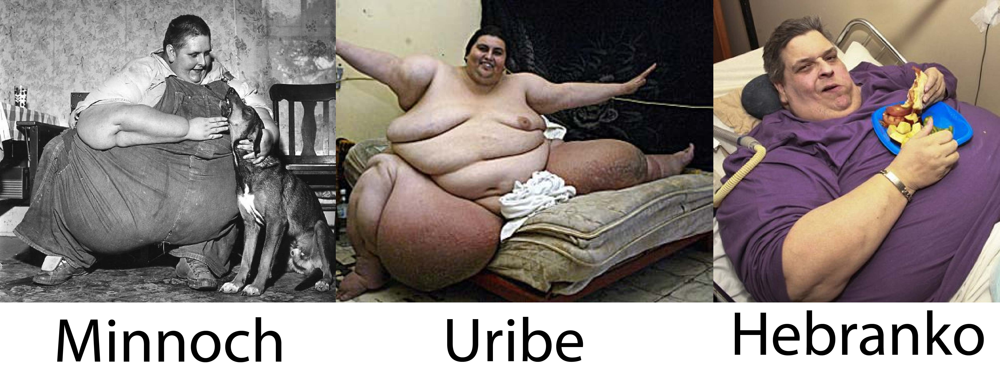
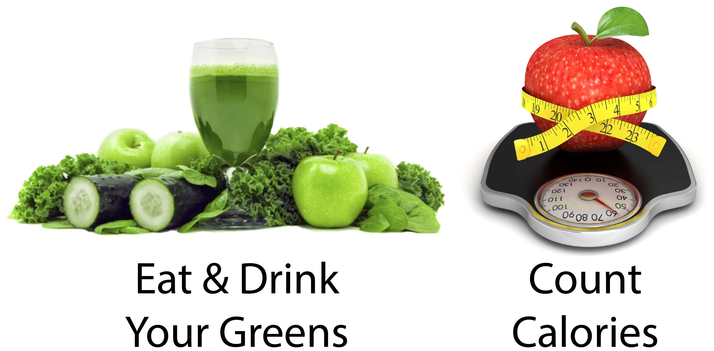
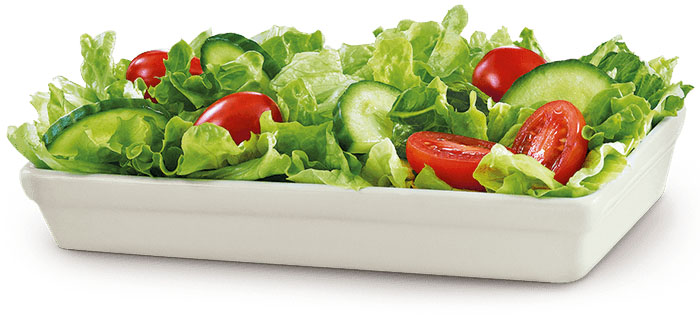
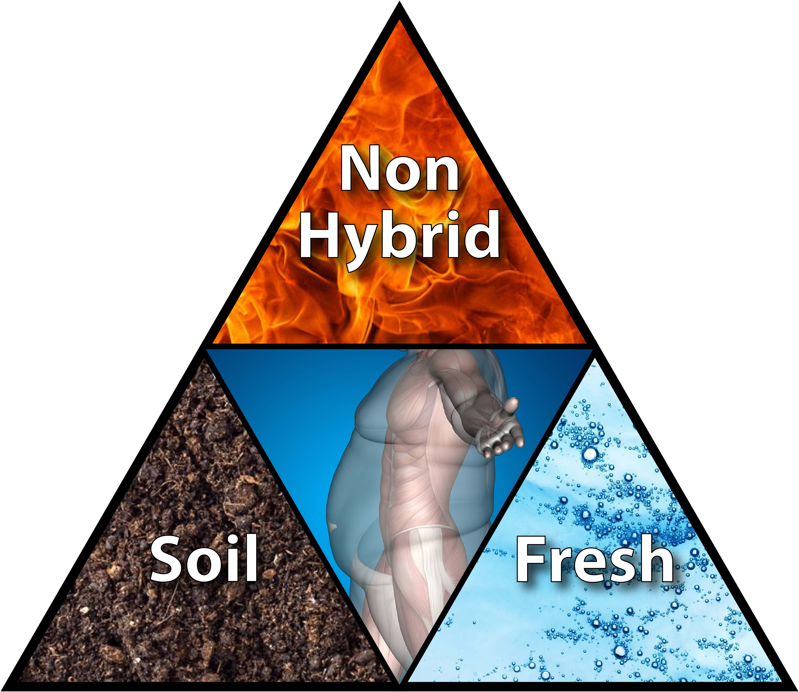

These people on average lost 800 pounds each... then gained it back!?

These three people are immortal in the Guinness Book of World Records... but when you find out they gained their weight back, what goes through your head?
Notice your first reaction... it's hard to believe isn't it?
Their weight loss was the only thing that prolonged their lives, and to gain it back would literally cost them it. You might wonder: "After so much hard work, how is it possible to slip so far back into deadly old habits?"
Now, you probably only want to lose stomach fat, but if we look at the statistics... nearly 65% of people that diet will gain their weight back. (ref.) Is there really nothing to better our chances aside from sheer willpower?
Luckily... science can explain what's preventing most men over 30 from getting shredded.
You need to know that there's only 2 ways to lose stomach fat and keep it off:
1. Occasionally resist from eating solid food (temporary juice / water fast to allow your body to clean itself out of last night's leftovers)
2. Eat More Healthy!
(I'm not mentioning the gym here, because you can still lose weight without going, but you can't lose weight without eating right.)
The trouble with the latter, is that "healthy dieting" is the cause of men not being able to keep a flat stomach.
Sounds counter-intuitive right? But let me explain.
What does the very best dieting advice recommend?

This is the mantra that gets repeated over and over again. But you and I both know that no one is going to do this EVERY day for the rest of their lives. And for good reason too. Here's why...
Not only does this make for a boring meal, is an acquired taste, will leave you feeling empty... it doesn't even provide you with the nutrition that you think your getting!
The myth of "The Ultimate Green Juice & Salad"


I can hear it now, the dietitians are screaming: "What the hell, have you lost it!?"
You see, I used to believe in this advice. For one whole year, I brought all different kinds of salads to work (you think it, I ate it) and even made my own green juice for breakfast (following the same worn-out recipe you see all over the web). But throughout the day, and especially when I got home, I was craving that "stick to your gut" feeling. That let me know my body wasn't nearly getting the nutrition it needed if I was craving other foods so quickly. Later on, when I stopped following the typical "diet advice" and started substituting hybrid food out for non-hybrid food I noticed a HUGE difference in how I felt. This was the key I was missing!
Trouble is, almost no one is going to share with you the 3 most important factors to consider when you want to "eat healthy." I call it the Triangle of Health:

Let it be clear:
1. Food that grows in empty soil will be empty. Most farmers only put back 3 minerals in the soil, instead of the 90 minerals your body needs. "Wild-crafted" food is the solution.. that is if you can find it.
2. Leafs go bad quicker than any other part of a plant (meaning you get the least amount of energy from it, unless you're eating it within a week after being pulled from the ground or it's dried right away like the leaves in a tea bag).
3. Most "greens" in the store are hybrid. Even the very best, Kale, is still not going to feed you the way you think it is. But why does everyone talk so good about it then? You don't hear nearly as many people talk about Watercress... yet if you look it up you'll see that it's much better than Kale. So what's going on here?
This is why people get sick. Put simply, we're taught to eat food that doesn't feed you. This is why your body craves more quantity, because you're not giving it quality.
So let the dietitians continue to give their diet tips. You and me are going to focus on eating non-hybrid food.
Now we come to this...
The myth of "Counting Calories"
Don't be fooled, counting calories is a form of self-punishment, because you're depriving yourself of what you really want... and this can only last for so long.
Neither of us likes to be told, "You can't have this." Now I want to go out of my way just so I can have it!
Instead, what I'm telling you to do is eat the foods you like... but focus on the quality, not quantity.
Let's be real, if you're hungry you're going to grab the nearest thing to eat.
But if you replace all the hybrid food with their healthy non-hybrid equal, then you can open up the fridge and quickly grab what you're craving without having to feel guilty about it. You won't feel like you're missing out on anything. And this goes the same for "cheat foods."
I call this method substituting instead of dieting. Two completely different approaches.
Now if you've found this article interesting, be sure to visit the home page to begin your own journey of losing weight by clicking here.